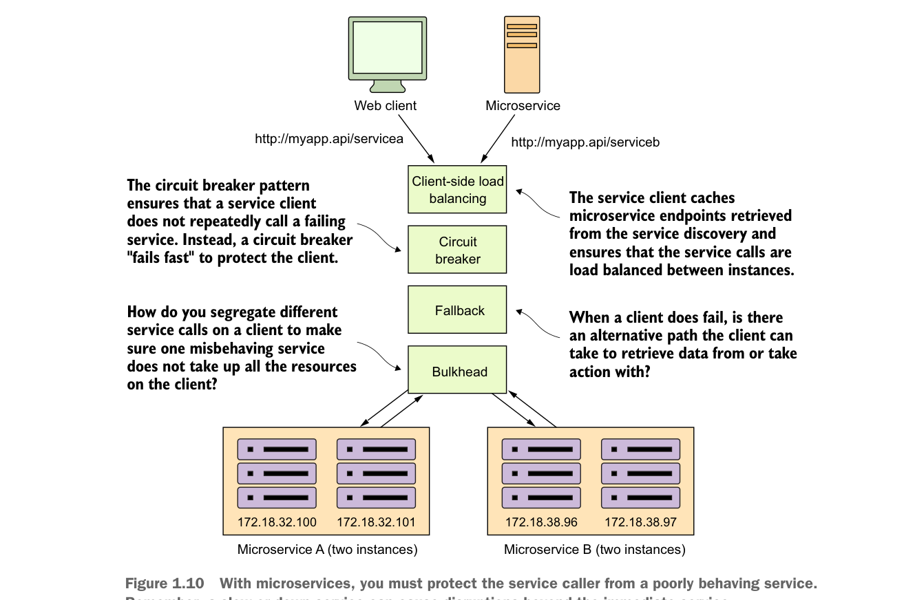

lan truyền lên và ra ngoài tới các người tiêu dùng dịch vụ. Vì mục đích này, chúng ta sẽ trình bày bốn mẫu khả năng phục hồi của client:
- Cân bằng tải phía client—Làm thế nào để lưu cache vị trí các phiên bản dịch vụ trên client dịch vụ sao cho các cuộc gọi tới nhiều phiên bản của một microservice được cân bằng tải tới tất cả các phiên bản khỏe mạnh của microservice đó?
- Mẫu ngắt mạch (circuit breaker pattern)—Làm thế nào để ngăn client tiếp tục gọi một dịch vụ đang bị lỗi hoặc gặp vấn đề về hiệu năng? Khi một dịch vụ chạy chậm, nó tiêu tốn tài nguyên trên client đang gọi nó. Bạn muốn các cuộc gọi microservice thất bại phải “fail-fast” để client gọi có thể nhanh chóng phản hồi và thực hiện hành động phù hợp.
- Mẫu dự phòng (fallback pattern)—Khi một cuộc gọi dịch vụ thất bại, làm thế nào để cung cấp cơ chế “plug-in” cho phép client dịch vụ cố gắng thực hiện công việc của mình qua các phương án thay thế khác ngoài microservice đang được gọi?
- Mẫu vách ngăn (bulkhead pattern)—Ứng dụng microservice sử dụng nhiều tài nguyên phân tán để thực hiện công việc. Làm thế nào để phân tách các cuộc gọi này sao cho hành vi sai lệch của một cuộc gọi dịch vụ không ảnh hưởng tiêu cực tới phần còn lại của ứng dụng?

Với microservices, bạn phải bảo vệ người gọi dịch vụ khỏi một dịch vụ hoạt động kém. Hãy nhớ, một dịch vụ chậm hoặc ngừng hoạt động có thể gây gián đoạn vượt ra ngoài dịch vụ trực tiếp.